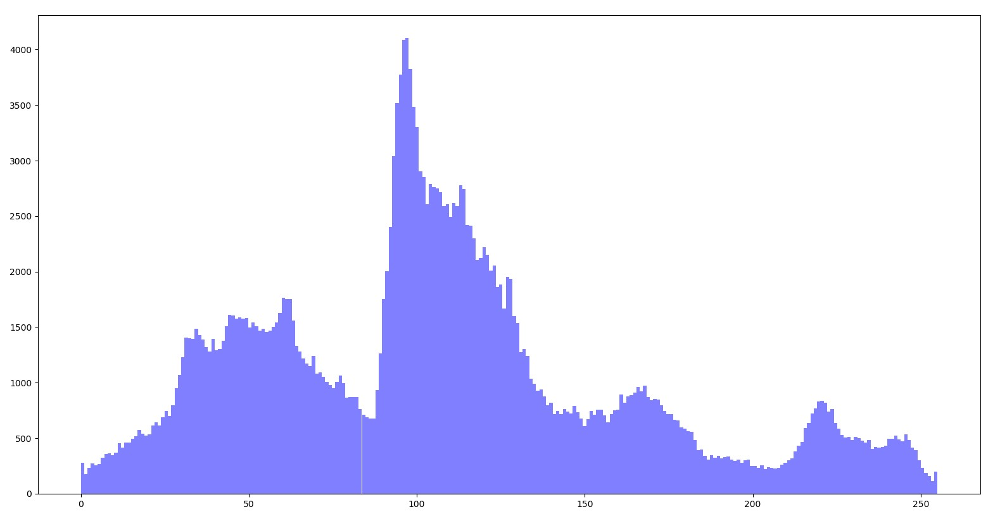
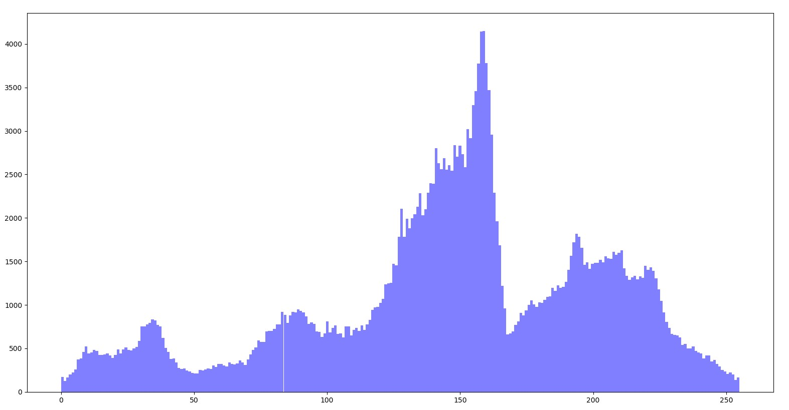
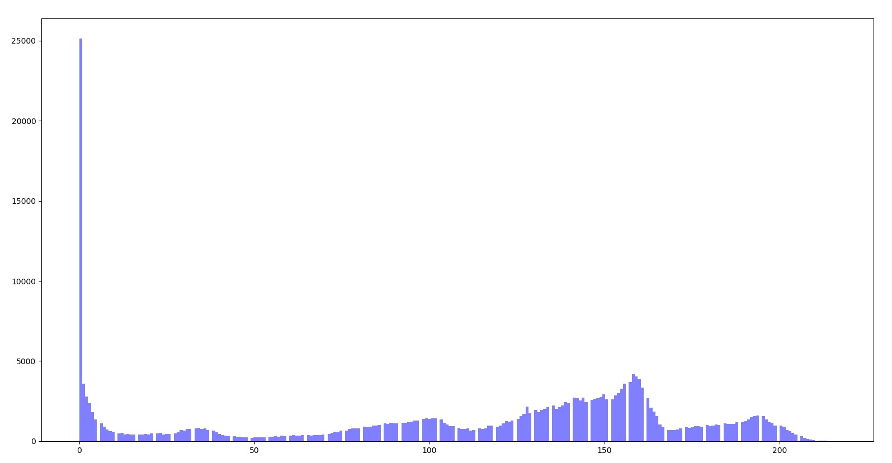
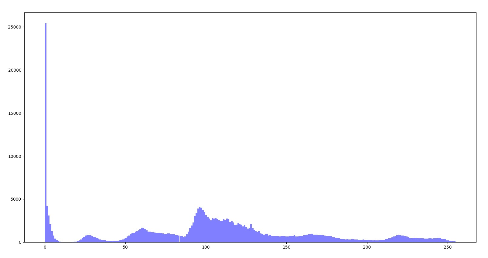
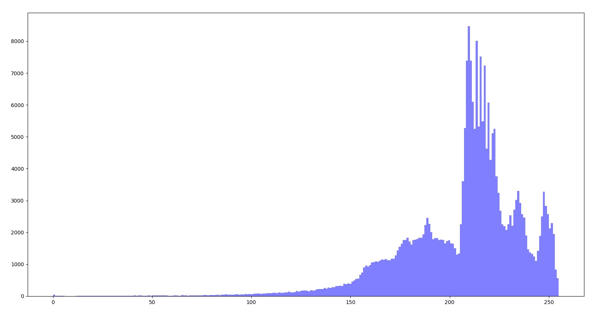

Part 2
Create a function to compute the histogram of an image. Plot the histograms of the input and transformed images.Histogram.py
Grayscale Image:

Histogram:
Inverted Image:

Histogram:
Binary Image Transformation:

Histogram:
Multilevel Transformation:

Histogram:
Log Base10 Transformation:

Histogram:
Gamma Transformation: